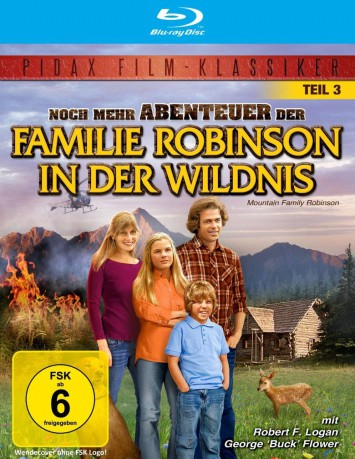

gesehen am 21.11.2016
gesehen am 21.11.2016Alternativ: Mountain Family Robinson gesehen am 21.11.2016
 
 IMDB-Wertung: 6.6 / 10
IMDB-Wertung: 6.6 / 10  Metascore:
Metascore: 
Ein Hubschrauber stört die Ruhe der Robinsons an einem Sommertag. Der Forstbeamte Brooks interessiert sich für das einsiedlerische Anwesen der Aussteiger und bringt eine schlimme Nachricht: Skip, Pat, Jenny und Toby sollen ihr Stück Land in dem Naturschutzgebiet räumen! Zu dieser Sorge gesellen\r sich alsbald andere Probleme: ein schweres Unwetter zerstört den Garten und verwüstet das Dach ihrer Blockhütte. Eine weitere Hiobsbotschaft trifft ein: Pats Mutter ist schwer krank. Pat verlässt den einsamen See in den Rocky Mountains und will – während sie sich um ihre Mutter kümmert – darüber nachdenken, ob sie überhaupt weiterhin in der Wildnis leben soll. Wird sie zu Skip und den Kindern zurückkehren? Und darf die Familie Robinson überhaupt auf der Parzelle im Wald weiterleben?
Jahr: 1979
Dauer: 99 Minuten
FSK: 6
Land: USA Studio: Pacific International EnterprisesTonspuren: DD2.0 - ,
Untertitel:
Auflösung: 1080p (1440x1080) Größe: 7198 MB
Regisseur: Jack Couffer
Drehbuch: Paul Mayersberg
Soundtrack:
Darsteller:
 George 'Buck' Flower als Boomer
George 'Buck' Flower als Boomer William Bryant als Forest Ranger
William Bryant als Forest RangerDatei: X:\Kinder Collections\Familie Robinson\Noch mehr Abenteuer der Familie Robinson in der Wildnis (1979, FSK6, 1440x1080).mkv seit 18.11.2016
Festplatte: Kinder-Filme+Trick
 Alle Filme aus Gruppe 'Kinder Collections\Familie Robinson'
Alle Filme aus Gruppe 'Kinder Collections\Familie Robinson'